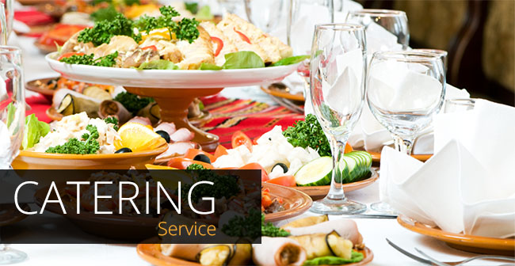

Catering
Since 2010 Curbside Thai has provided top-class catering for weddings and special events. We cover Charlotte and large regions of North Carolina with our mobile food truck, built specially for catering big events.
Meals are cooked up hot and on the spot at your venue. We have an experienced uniformed catering crew providing professional service for events ranging from 50 to 300. We will provide the plates, linens, glassware and other dining items, upon request.
Curbside Thai is licensed to do full bar service catering with a wide range of spirits, beer, and wine! Ask us about a custom drink menu for your wedding or private event. We also can provide an array of great specialty Asian teas and drinks.
Impress your friends and co-workers with a Curbside Thai-catered event!